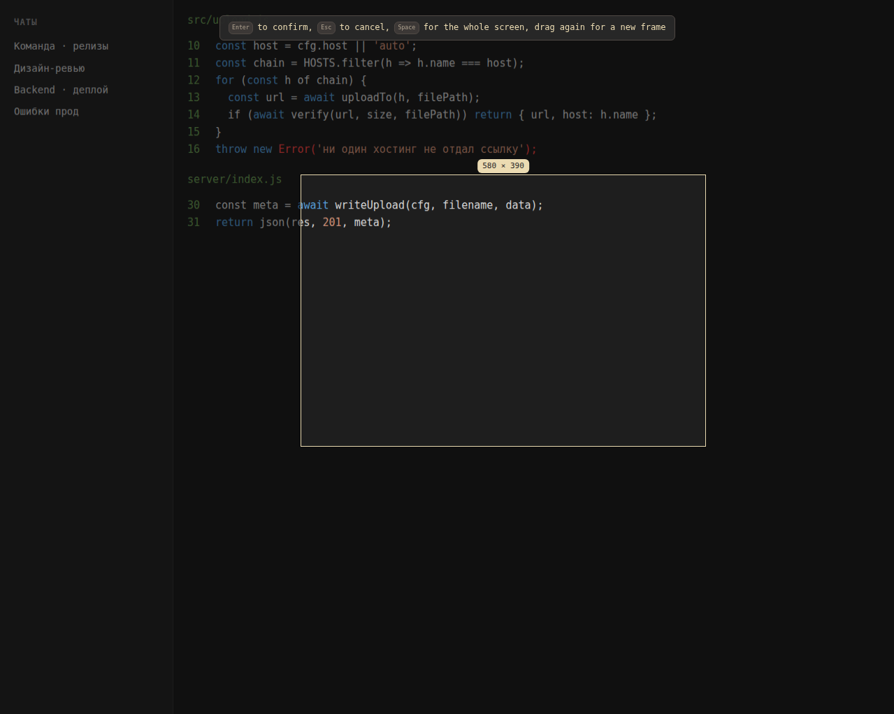
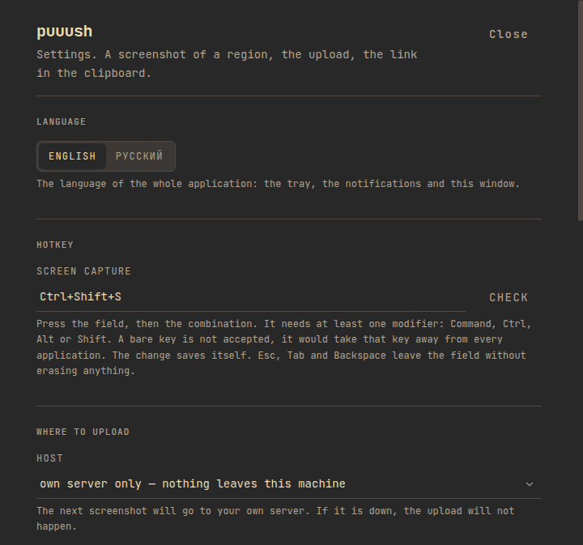
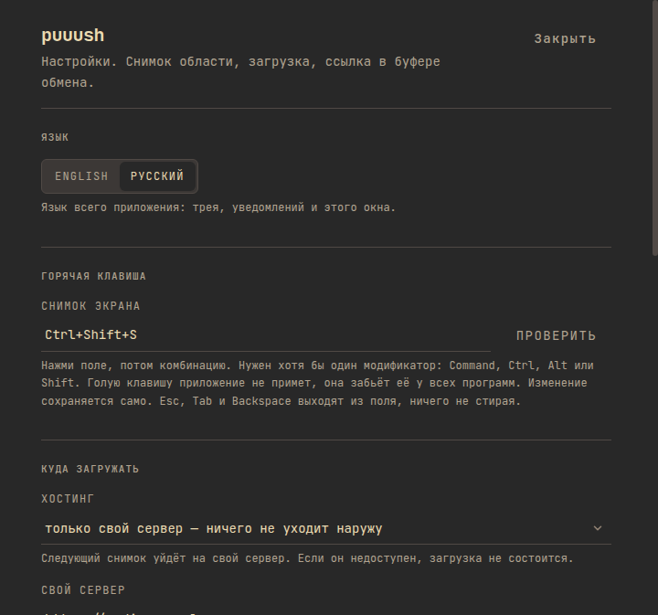

Screenshot a region, get the link, paste it.
Press the hotkey, drag a frame, and the picture is uploaded and the link is already in your clipboard. The app lives in the tray, has no window of its own, and can send the file to a server you own.
Free and MIT licensed. Builds for macOS, Windows and Linux. English by default, Russian when you want it.

Three seconds from the hotkey to the clipboard.
- hotkey
- screen capture
- the frame you dragged
- upload
- link in the clipboard
The capture is cut in device pixels rather than in the scaled coordinates the pointer reports, so a Retina display keeps its full resolution in the uploaded file. Every upload is checked with a real request before the link is copied: a link that does not serve the file never reaches the clipboard.
-
Nothing runs in the background.
The app sits in the tray and does nothing until the hotkey. There is no window to look at and no account to log into.
-
The frame is yours.
Drag a rectangle, press Enter. A click without a drag takes the whole screen, and Esc cancels.
-
Nothing huge leaves the machine.
A file over 64 MiB is refused before it is sent, and the local copy is deleted unless you asked to keep it.
Your server first, a public host only if it is down.
Point the app at a server you run and the file lands on your own domain. The write key travels in the Authorization header, never in the URL, so it does not end up in the access log of every proxy in front of the server. When your server refuses the file, the upload falls back to catbox, then pomf2, then uguu, and the interface says which one served the last link.

The server is a small program with no dependencies.
The server side is Node and nothing else: it accepts POST /v1/uploads, keeps a ledger, and deletes what grew too old. Caddy serves the files. Updating it means copying one file and restarting a service, so it has no package manager in the middle and nothing to reinstall.
| Mode | Where the file goes |
|---|---|
| Your own server | Your domain, and nowhere else. The upload fails loudly if the server does. |
| Auto | Your own server first, then the public hosts, in that order. |
| A public host | catbox, pomf2 or uguu, and the window says so in plain words. |
English by default, Russian when you want it.
The language is a setting, and it covers the whole application: the tray menu, the notifications, the command line and both windows. English is what the app opens in; Russian is one click away in the settings, and the choice is kept with the rest of the settings.

The same thing from a script.
There is a command line mode for the machines without a screen and for the scripts that should not open a window. It prints the link and nothing else, so it pipes into anything.
puuush --cli ~/Desktop/screen.pngThe mode refuses to upload when the settings file cannot be read. A broken settings file means the upload target is unknown, and an unknown target is exactly the case where a screenshot would quietly leave the machine.
Install
Download the installer for your system from the latest release. The app keeps its settings in the usual application data folder, and they survive an update.
| Platform | Artefact | First launch |
|---|---|---|
| macOS | .dmg, Apple silicon and Intel | The app is not notarized, so macOS asks once. |
| Windows | NSIS installer, .exe | SmartScreen asks once. |
| Linux | .AppImage and .deb | Nothing to confirm. |
What you get, and where it lives.
| Platforms | macOS on Apple Silicon and Intel, Windows, and Linux as an AppImage or a .deb package. |
|---|---|
| Where it lives | The settings and the local copies of screenshots stay in your operating system's application data folder. |
| Your server | Optional. The same program accepts uploads on POST /v1/uploads and needs nothing but Node. |
| Languages | English and Russian. |
| Licence | MIT. Read the source, report a problem, or build it yourself. |